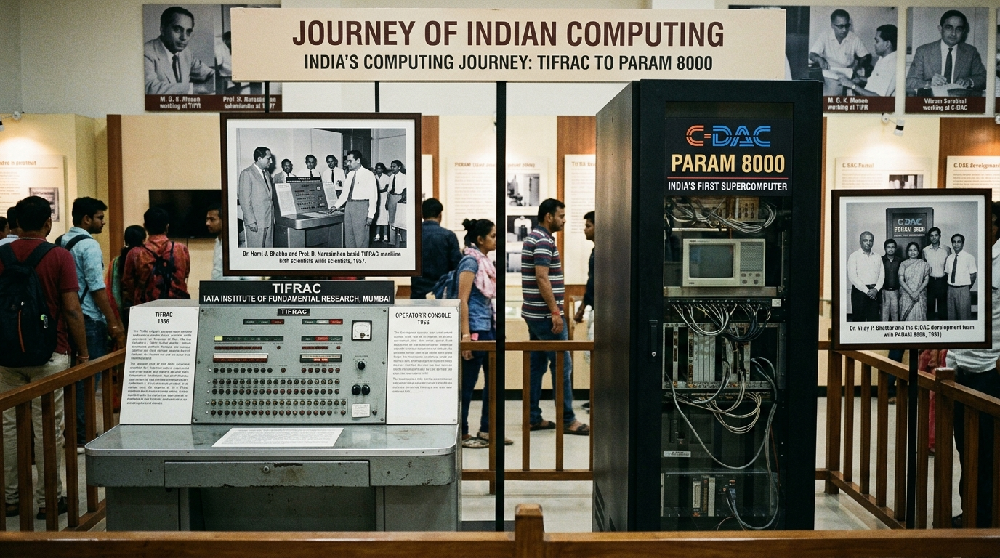

एका साध्या लाकडी मोजणी साधनाने (अबॅकस) सुरू झालेला प्रवास... ते आजच्या तुमच्या हातातील स्मार्टफोन, डेटा सेंटर्स आणि कृत्रिम बुद्धिमत्तेपर्यंत (AI)!

TIFR मुंबईचा पहिला स्वदेशी डिजिटल संगणक व पुण्यात तयार झालेला महासंगणक!
कुतूहल आणि प्रश्नांपासून सुरू होऊन आधुनिक AI पर्यंतचा मानवी बुद्धिमत्तेचा प्रवास. कोणत्याही कार्डवर क्लिक करून स्लाईड्स सुरू करा!
खालील स्लायडर फिरवून प्राचीन अबॅकसपासून ते आधुनिक क्वांटम व AI युगातील महत्त्वाचे शोध एक्सप्लोर करा!
व्हॅक्यूम ट्यूब्स ते ट्रान्झिस्टर, आयसी, मायक्रोप्रोसेसर आणि आधुनिक कृत्रिम बुद्धिमत्तेपर्यंत तंत्रज्ञानातील बदल:
| पिढी व काळ (Generation) | मुख्य तंत्रज्ञान (Technology) | आकार (Size) | गती (Speed) | वीज वापर (Power) | प्रोग्रामिंग भाषा (Software) | उदाहरणे (Examples) | व्हिडिओ (Video Reel) |
|---|
First Generation: Vacuum Tubes, ENIAC and Room-sized Giant Computing
इतिहासामध्ये पहिल्यांदाच इलेक्ट्रॉनिक पद्धतीने हजारो पटींनी वेगवान गणना करणे शक्य झाले. १८,०००+ काचेच्या व्हॅक्यूम ट्यूब्स आणि ३० टन वजनाचा ENIAC हा आधुनिक संगणकाचा आद्य जनक होता!
१९५० च्या दशकातील TIFRAC पासून ते १९९१ च्या स्वदेशी सुपरकॉम्प्युटर 'PARAM 8000' पर्यंतचा भारताचा गौरवशाली इतिहास.
डॉ. होमी भाभा यांच्या दूरदृष्टीतून आणि प्रा. आर. नरसिंहन यांच्या कुशल नेतृत्वाखाली टाटा इन्स्टिट्यूट ऑफ फंडामेंटल रिसर्च (TIFR), मुंबई येथे TIFRAC विकसित झाला.
जेव्हा अमेरिकेने भारताला हवामान अभ्यासासाठी 'Cray' सुपरकॉम्प्युटर देण्यास नकार दिला, तेव्हा भारताने स्वतःच्या पायावर उभे राहण्याचा निर्धार केला.
बाहेरून दिसणारा डबा उघडून आतले मुख्य अवयव पाहूया! साध्या घरगुती उपमांच्या साहाय्याने जाणून घ्या:
३ कठीणता पातळी (Std 1-4, 5-7, 8-10), कालानुक्रम मांडणी आणि पिढ्या जुळवण्याचे परस्परसंवादी खेळ:
केवळ फळ्यावर व्याख्या न शिकवता विद्यार्थ्यांना कृतीतून आणि खेळांमधून संगणक शिकवणारे प्रात्यक्षिक उपक्रम:
Computer History Museum, Penn Archives, TIFR, C-DAC, CERN व Nobel Foundation